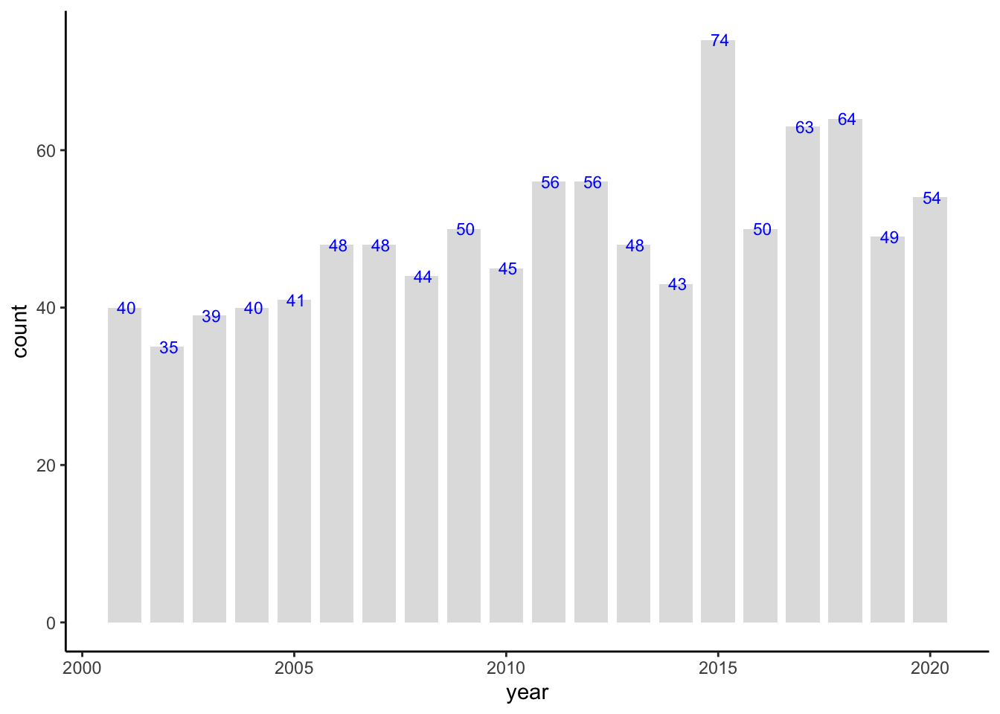
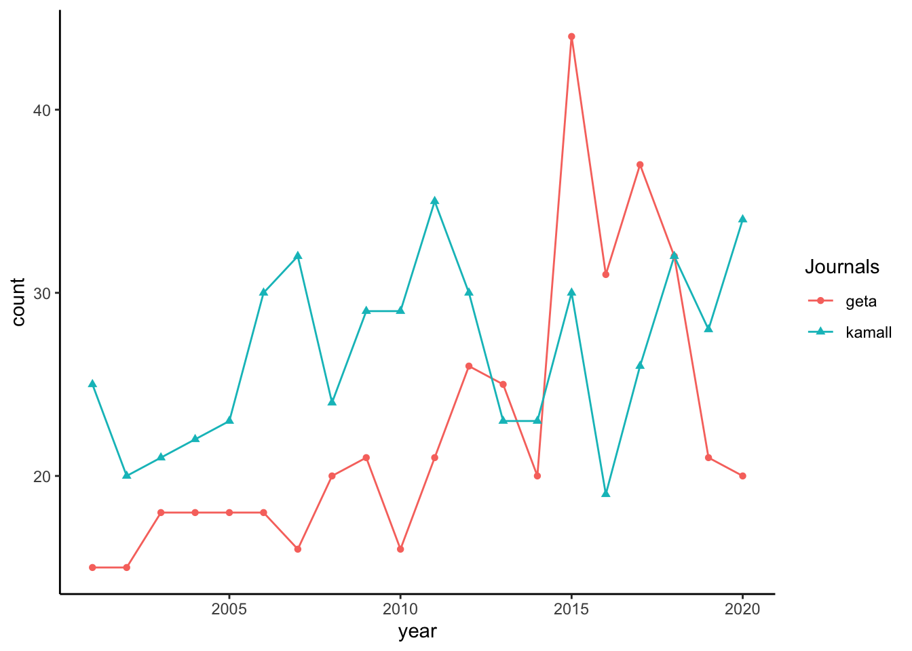
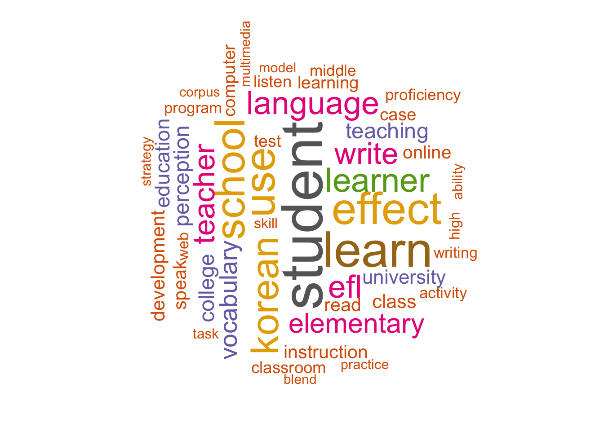
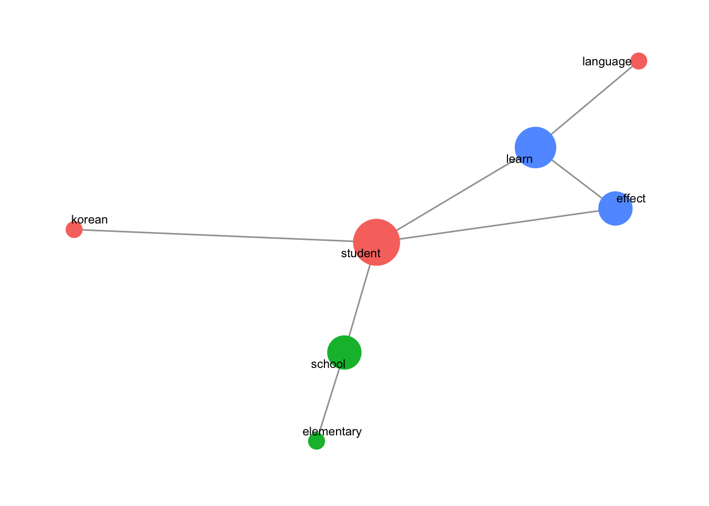
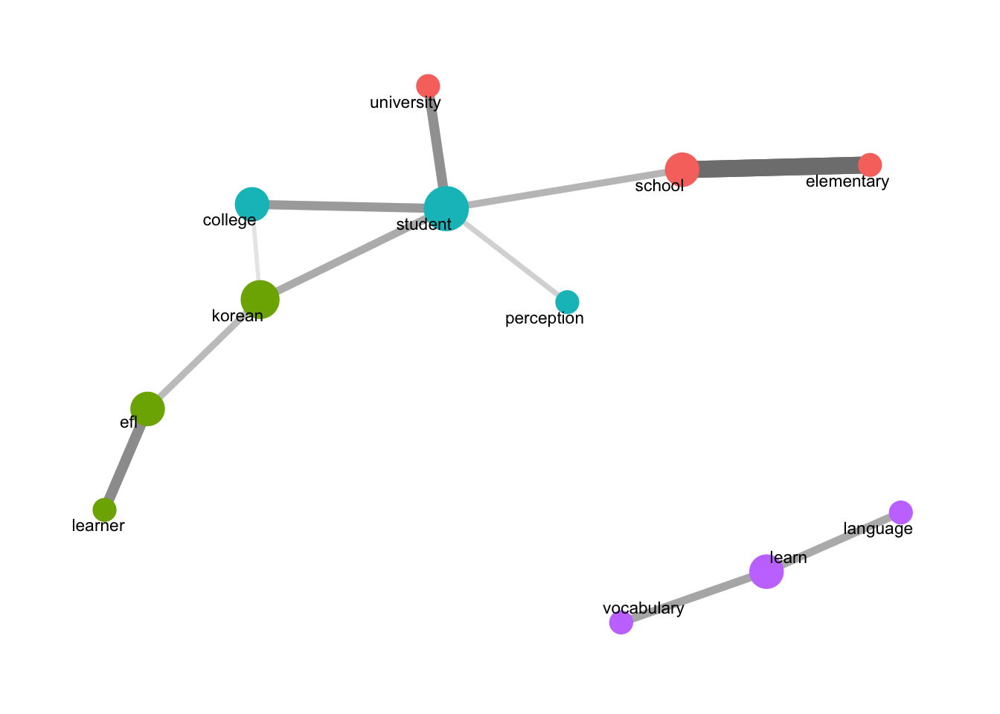
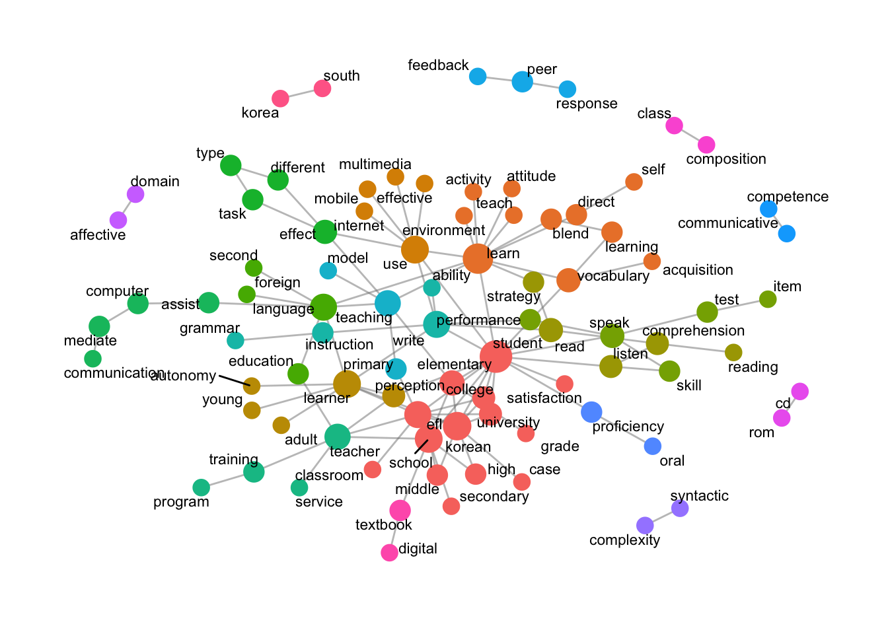
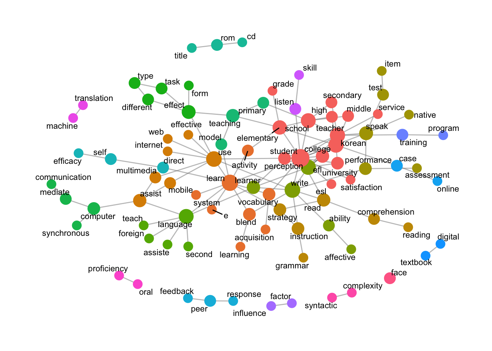
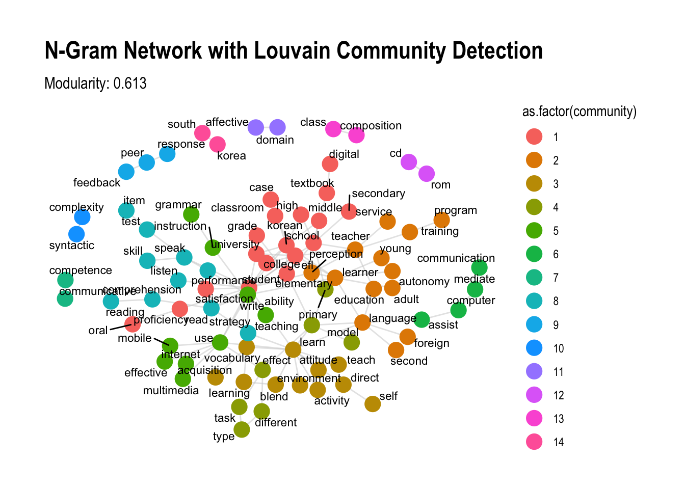
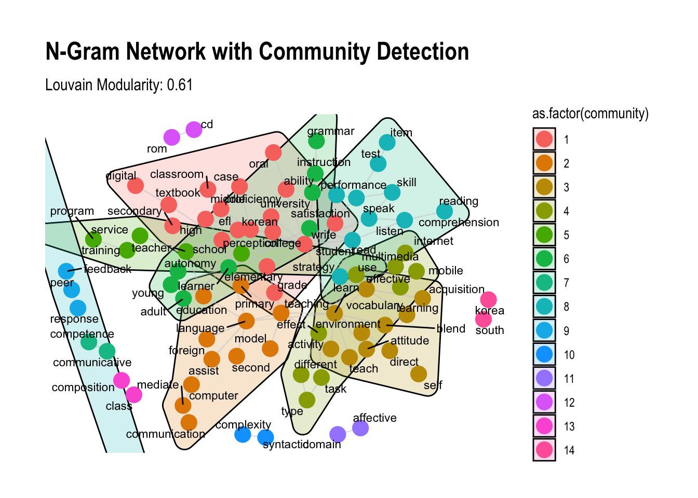

# install.packages("igraph") # Network visualization and analysis
# install.packages("quanteda") # Text analysis
# install.packages("quanteda.textstats") # Text statistics for semantic networks
# install.packages("widyr") # Pairwise correlations for networks
# install.packages("ggraph") # Network graphing tool with ggplot2 syntax
# install.packages("tidygraph") # Manipulate network data in tidy format
# install.packages("ggplot2")15 Semantic Network Analysis (Examples)
Here’s a step-by-step guide for installing R, RStudio, and the essential packages for semantic network analysis.
15.1 Preparation (R)
15.1.1 Step 1: Install R
- Go to CRAN: Visit the Comprehensive R Archive Network (CRAN) here.
- Download R:
- Select your operating system (Windows, macOS, or Linux).
- Follow the download and installation instructions specific to your OS.
- Install R:
- Run the downloaded file and follow the on-screen instructions.
- Once complete, R should be ready to use.
15.1.2 Step 2: Install RStudio
- Go to RStudio’s Website: Visit RStudio’s download page.
- Download RStudio:
- Choose the free version of RStudio Desktop.
- Download the version appropriate for your operating system.
- Install RStudio:
- Run the downloaded file and follow the installation instructions.
- After installation, open RStudio to confirm it’s working and connected to R.
15.1.3 Step 3: Install Required Packages for Semantic Network Analysis
Open RStudio and install the necessary packages for semantic network analysis. Here’s how:
- Open RStudio.
- Install packages by typing the following commands in the Console and pressing Enter after each line:
- Load packages to check if they’re correctly installed:
library(igraph)Warning: package 'igraph' was built under R version 4.3.3
Attaching package: 'igraph'The following objects are masked from 'package:stats':
decompose, spectrumThe following object is masked from 'package:base':
unionlibrary(quanteda)Warning: package 'quanteda' was built under R version 4.3.3Warning in .recacheSubclasses(def@className, def, env): undefined subclass
"ndiMatrix" of class "replValueSp"; definition not updatedPackage version: 4.1.0
Unicode version: 14.0
ICU version: 71.1Parallel computing: disabledSee https://quanteda.io for tutorials and examples.library(quanteda.textstats)Warning: package 'quanteda.textstats' was built under R version 4.3.3
Warning: undefined subclass "ndiMatrix" of class "replValueSp"; definition not
updatedlibrary(widyr)
library(ggraph)Loading required package: ggplot2library(tidygraph)
Attaching package: 'tidygraph'The following object is masked from 'package:quanteda':
convertThe following object is masked from 'package:igraph':
groupsThe following object is masked from 'package:stats':
filter15.2 Example R Code
This R code is designed to import, rename, and display the initial rows of a dataset. Here’s a breakdown of each step:
15.2.1 Data Impoart
- Load Required Libraries:
library(readr); library(dplyr); library(showtext)
Attaching package: 'dplyr'The following objects are masked from 'package:igraph':
as_data_frame, groups, unionThe following objects are masked from 'package:stats':
filter, lagThe following objects are masked from 'package:base':
intersect, setdiff, setequal, unionLoading required package: sysfontsLoading required package: showtextdblibrary(readr): Loads thereadrpackage, which includes functions for reading rectangular data (like CSV files) quickly and efficiently.library(dplyr): Loads thedplyrpackage, a popular package for data manipulation.library(showtext): Loads theshowtextpackage, used for handling fonts when creating plots. Although it’s loaded here, it’s not directly used in the subsequent code.
- Data Import:
data_raw <- read_csv("data.csv", show_col_types = FALSE)data_raw <- read_csv("data.csv"): Reads a CSV file named “data.csv” and stores it in a variable calleddata_raw. Theread_csv()function fromreadris designed for fast reading and returns atibble, a more user-friendly form of the standard data frame in R.
- Rename a Column:
data_original <- data_raw %>% rename(Journals = j_short)data_original <- data_raw %>% rename(Journals = j_short): Creates a new data framedata_originalby renaming thej_shortcolumn toJournals.%>%: This is the pipe operator fromdplyr, which allows you to chain functions together.rename(Journals = j_short): Therename()function changes the name ofj_shorttoJournalsin the data frame.
- Display the First Rows of the Dataset:
head(data_original)# A tibble: 6 × 5
serial id_record Journals year title_en_lower_cleaned
<dbl> <chr> <chr> <dbl> <chr>
1 1 geta_2001_6_1_5 geta 2001 a study on the teaching models of nat…
2 2 geta_2001_6_1_33 geta 2001 a study of teaching process oriented …
3 3 geta_2001_6_1_61 geta 2001 a study of the development and applic…
4 4 geta_2001_6_1_83 geta 2001 an instructional model for english wr…
5 5 geta_2001_6_1_103 geta 2001 a study on the effects of call on ele…
6 6 geta_2001_6_1_121 geta 2001 a study on methods of enhancing focus…head(data_original): Displays the first six rows of thedata_originaldata frame, giving a quick view of its structure and content.
15.2.2 Stopwords
This R code is handling custom stopwords by reading, modifying, and filtering them as follows:
- Read Stopwords File:
stopwords <- readLines("my_stopwords.txt", encoding = "UTF-8")readLines("my_stopwords.txt", encoding = "UTF-8"): Reads the content of the file"my_stopwords.txt"line by line, storing each line as an individual element in thestopwordsvector. Theencoding = "UTF-8"ensures that any non-ASCII characters are read correctly.stopwords: This variable now contains a list of words that will be treated as stopwords.
Check Type of Stopwords:
typeof(stopwords)[1] "character"typeof(stopwords): Checks the data type ofstopwords. SincereadLines()returns a character vector, this will likely output"character".
Add New Stopwords:
stopwords_added <- c("english", "korean") # add new stopwords stopwords <- append(stopwords, stopwords_added) stopwords[0:10][1] "‘d" "‘ll" "‘m" "‘re" "‘s" "‘ve" "’d" "’ll" "’m" "’re"stopwords_added <- c("english", "korean"): Creates a vectorstopwords_addedwith new words (“english” and “korean”) to be added as stopwords.append(stopwords, stopwords_added): Appends the new words instopwords_addedto the end of thestopwordsvector.
Remove Specific Stopwords:
stopwords_deleted <- c("korean", "‘ll", "‘d") for (i in stopwords_deleted){ stopwords <- gsub(i, "", stopwords) } stopwords_deleted[1] "korean" "‘ll" "‘d"stopwords_deleted <- c("korean", "‘ll", "‘d"): Specifies words to be removed from the stopwords list, including “korean”, “’ll” (contraction for “will”), and “’d” (contraction for “would”).- Loop to Remove Words:
for (i in stopwords_deleted): Iterates over each word instopwords_deleted.stopwords <- gsub(i, "", stopwords): Usesgsub()to replace occurrences of each wordiinstopwordswith an empty string, effectively removing it. This works by searching for each specified word and replacing it with""wherever found.
15.2.3 Library for Graphs
- Install ggplot2:
# install.packages("ggplot2")install.packages("ggplot2"): Installs theggplot2package, which is one of R’s most popular packages for creating high-quality graphics. It needs to be run only once per environment (or wheneverggplot2is missing or needs updating).
Load Library:
library(ggplot2)library(ggplot2): Loadsggplot2, enabling you to use its functions for data visualization.ggplot2provides a grammar of graphics, allowing for flexible creation of graphs.
15.2.4 Custom Functions for Creating Bar and Line Graphs
These two custom functions, bar_freq_f and line_freq_f, are designed to create bar and line graphs using ggplot2. Each function takes an input dataset and generates a graph with specified formatting and aesthetic customizations.
Bar Graph Function (
bar_freq_f):bar_freq_f <- function(input) { ggplot(input, aes(x = year, y = count)) + geom_bar(stat = "identity", width = 0.8, fill = "gray88") + geom_text(aes(x = year, y = count, label = count), hjust = 0.4, color = "blue", size = 3) + theme(panel.grid.major = element_blank(), panel.grid.minor = element_blank(), panel.background = element_blank(), axis.line = element_line(colour = "black")) }ggplot(input, aes(x = year, y = count)): Initializes a ggplot object withyearon the x-axis andcounton the y-axis.geom_bar(stat = "identity", width = 0.8, fill = "gray88"): Adds a bar graph where each bar’s height represents the count value (stat = "identity"means the y-value is taken directly from thecountvariable). The bar color is set togray88, and the width is set to 0.8.geom_text(...): Adds text labels displaying thecountvalue on each bar, with a horizontal offset (hjust = 0.4), red color, and size of 3.theme(...): Customizes the graph’s appearance by:- Removing major and minor grid lines.
- Setting the background to be blank (white).
- Adding a black line for the axes.
Line Graph Function (
line_freq_f):
line_freq_f <- function(input) {
ggplot(input, aes(x = year, y = count, group = Journals)) +
geom_line(aes(color = Journals)) +
geom_point(aes(color = Journals, shape = Journals)) +
theme(legend.position = 'right') +
theme(panel.grid.major = element_blank(),
panel.grid.minor = element_blank(),
panel.background = element_blank(),
axis.line = element_line(colour = "black"))
}ggplot(input, aes(x = year, y = count, group = Journals)): Initializes a ggplot object withyearon the x-axis,counton the y-axis, and each line group represented by theJournalsvariable.geom_line(aes(color = Journals)): Adds lines to the plot, coloring each line according to theJournalsvariable.geom_point(aes(color = Journals, shape = Journals)): Adds points to the line plot, matching the color and shape to eachJournalsgroup.theme(legend.position = 'right'): Positions the legend on the right side of the graph.theme(...): Customizes the plot similarly to the bar graph, removing grid lines and background while adding a black axis line.
15.2.5 Custom Functions for Creating NLP Tasks
This code defines multiple functions to conduct natural language processing (NLP) tasks, including tokenization, stopword removal, word counting, word cloud creation, co-occurrence network analysis, and n-gram processing. Below is an explanation of each function:
NLP Tagging Function (
ud_tagger_f)library(udpipe) ud_model <- udpipe_download_model(language = "english")Downloading udpipe model from https://raw.githubusercontent.com/jwijffels/udpipe.models.ud.2.5/master/inst/udpipe-ud-2.5-191206/english-ewt-ud-2.5-191206.udpipe to /Users/won/Library/CloudStorage/OneDrive-고려사이버대학교/09_Book_Writing/F2024_IGSE_Basic_AI_Programming/english-ewt-ud-2.5-191206.udpipe- This model has been trained on version 2.5 of data from https://universaldependencies.org- The model is distributed under the CC-BY-SA-NC license: https://creativecommons.org/licenses/by-nc-sa/4.0- Visit https://github.com/jwijffels/udpipe.models.ud.2.5 for model license details.- For a list of all models and their licenses (most models you can download with this package have either a CC-BY-SA or a CC-BY-SA-NC license) read the documentation at ?udpipe_download_model. For building your own models: visit the documentation by typing vignette('udpipe-train', package = 'udpipe')Downloading finished, model stored at '/Users/won/Library/CloudStorage/OneDrive-고려사이버대학교/09_Book_Writing/F2024_IGSE_Basic_AI_Programming/english-ewt-ud-2.5-191206.udpipe'ud_model <- udpipe_load_model(ud_model$file_model) ud_tagger_f <- function(input) { udpipe_annotate(ud_model, x = input$title_en_lower_cleaned, doc_id = input$serial) %>% as.data.frame() %>% filter(!lemma %in% stopwords) %>% subset(upos %in% c("VERB", "NOUN", "ADJ")) }- This function uses the
udpipelibrary to tag words with parts of speech (POS) and filter out unwanted words. udpipe_annotate()annotates the text, creating a data frame with columns likelemma,upos, etc.- Filters out stopwords and keeps only verbs, nouns, and adjectives (
uposvalues).
- This function uses the
Word Count Function (
word_count_f)word_count_f <- function(input) { input %>% group_by(lemma) %>% summarise(count = n(), n_distinct_maker = n_distinct(lemma)) %>% arrange(desc(count)) }- Groups and counts occurrences of each lemma (word root), showing frequency for each unique word.
n_distinct_makerprovides a count of unique lemmas.
Word Cloud Function (
wordcloud_f)library(tm); library(wordcloud); library(memoise)Warning: package 'tm' was built under R version 4.3.3Loading required package: NLPAttaching package: 'NLP'The following object is masked from 'package:ggplot2': annotateThe following objects are masked from 'package:quanteda': meta, meta<-Attaching package: 'tm'The following object is masked from 'package:quanteda': stopwordsLoading required package: RColorBrewerwordcloud_f <- function(input, min_freq, max_words) { text <- input$lemma myCorpus <- Corpus(VectorSource(text)) myDTM <- TermDocumentMatrix(myCorpus, control = list(minWordLength = 1)) m <- as.matrix(myDTM) words_all <- sort(rowSums(m), decreasing = TRUE) df_all <- data.frame(word = names(words_all), freq = words_all) wordcloud(words = df_all$word, freq = df_all$freq, min.freq = min_freq, max.words = max_words, random.order = FALSE, rot.per = 0.35, colors = brewer.pal(8, "Dark2")) }- Creates a word cloud based on word frequency.
- Uses
TermDocumentMatrixto calculate word frequencies, then visualizes the most frequent words.
Pair Words Function (
pair_words_f)library(dplyr); library(widyr) pair_words_f <- function(input) { input %>% pairwise_count(item = lemma, feature = doc_id, sort = T) }- Computes the pairwise count of words based on document co-occurrence.
Degree Centrality Graph Function (
centrality_network)library(ggraph) centrality_network <- function(x) { ggraph(x, layout = "fr") + geom_edge_link(color = "gray50", alpha = 0.5) + geom_node_point(aes(size = centrality, color = group), show.legend = F) + scale_size(range = c(5, 15)) + geom_node_text(aes(label = name), repel = T, size = 3, family = "Arial") + theme_graph() }- Visualizes a network graph based on degree centrality of nodes.
centralitydetermines node size, andgroupdetermines color, withggraphused for layout.
Phi Coefficient Function (
words_cors_f)words_cors_f <- function(input, nsize) { input %>% add_count(lemma) %>% filter(n >= nsize) %>% pairwise_cor(item = lemma, feature = doc_id, sort = T) }- Computes the phi correlation (similarity) between words that frequently co-occur in documents.
Correlation Graph Function (
graph_cors_fandword_network_cor_f)graph_cors_f <- function(input, cor_size) { input %>% filter(correlation >= cor_size) %>% as_tbl_graph(directed = F) %>% mutate(centrality = centrality_degree(), group = as.factor(group_infomap())) } word_network_cor_f <- function(input, cor_size) { graph_cor <- graph_cors_f(input, cor_size) ggraph(graph_cor, layout = "fr") + geom_edge_link(color = "gray50", aes(edge_alpha = correlation, edge_width = correlation), show.legend = F) + scale_edge_width(range = c(1, 4)) + geom_node_point(aes(size = centrality, color = group), show.legend = F) + scale_size(range = c(5, 10)) + geom_node_text(aes(label = name), repel = T, size = 3, family = "Arial") + theme_graph() }graph_cors_ffilters correlations above a specified threshold and creates a network graph based on word similarity.word_network_cor_fplots the graph, with nodes sized by centrality and edges weighted by correlation.
N-Gram Processing and Graph Functions
data_ngram_separated_f <- function(x_data_input, ngram_size) { x_data_input %>% group_by(doc_id) %>% summarise(sentence = paste(lemma, collapse = " ")) %>% unnest_tokens(input = sentence, output = bigram, token = "ngrams", n = ngram_size) %>% separate(bigram, c("word1", "word2"), sep = " ") %>% count(word1, word2, sort = T) %>% na.omit() } data_ngram_graph_f <- function(ngram_separated, filter_size) { ngram_separated %>% filter(n >= filter_size) %>% as_tbl_graph(directed = F) %>% mutate(centrality = centrality_degree(), group = as.factor(group_infomap())) } word_network_ngram_f <- function(data_ngram_graph) { ggraph(data_ngram_graph, layout = "fr") + geom_edge_link(color = "gray50", alpha = 0.5) + geom_node_point(aes(size = centrality, color = group), show.legend = F) + scale_size(range = c(4, 8)) + geom_node_text(aes(label = name), repel = T, size = 3, family = "Arial") + theme_graph() }data_ngram_separated_fcreates n-grams and calculates word-pair frequencies.data_ngram_graph_ffilters frequent n-grams and structures the data for graphing.word_network_ngram_fvisualizes the n-gram network withggraph.
15.2.6 Articles by Year (Bar Graphs)
This code calculates the number of articles per year from the data_original dataset, saves the summary as a CSV file, and then creates a bar graph of article counts by year using the custom function bar_freq_f.
Group and Summarize Data by Year:
articles_by_year <- data_original %>% group_by(year) %>% summarise(count = n())group_by(year): Groupsdata_originalby theyearcolumn, so each year will have its own grouping.summarise(count = n()): Calculates the count (number of articles) in each year and stores it in a new column calledcount.- The resulting
articles_by_yeardata frame has two columns:yearandcount.
Save Summary to CSV:
write.csv(articles_by_year, "articles_by_year.csv")- Saves the
articles_by_yeardata frame as a CSV file named"articles_by_year.csv"in the working directory.
- Saves the
Generate Bar Graph:
bar_freq_f(articles_by_year)
- Calls the
bar_freq_ffunction to create a bar graph of article counts by year. - The graph uses
yearon the x-axis andcounton the y-axis, with additional customizations (e.g., bar color, grid settings) as defined in thebar_freq_ffunction.
- Calls the
15.2.7 Articles by Year and Journal (Line Graphs)
This code calculates the number of articles per year for each journal in data_original, then creates a line graph of these counts using the line_freq_f function.
Group and Summarize Data by Journal and Year:
articles_by_year_journal <- data_original %>% group_by(Journals, year) %>% summarise(count = n())`summarise()` has grouped output by 'Journals'. You can override using the `.groups` argument.group_by(Journals, year): Groupsdata_originalby bothJournalsandyearso that each journal-year combination has its own grouping.summarise(count = n()): Counts the number of articles for each journal-year combination, storing the count in a new column calledcount.- The resulting
articles_by_year_journaldata frame has three columns:Journals,year, andcount.
Generate Line Graph:
line_freq_f(articles_by_year_journal)
- Calls the
line_freq_ffunction to create a line graph, displaying thecountof articles byyearfor eachJournalsgroup. - The function plots each journal as a separate line with distinct colors and shapes for better differentiation, and positions the legend on the right side.
- Calls the
15.2.8 POS Tagging
This code installs and loads the udpipe package, and then applies the custom ud_tagger_f function on data_original to perform POS tagging and filtering. Here’s a breakdown of each part:
- Install and Load
udpipe:
#install.packages("udpipe")
#library(udpipe)install.packages("udpipe"): Installs theudpipepackage, which provides tools for natural language processing, including tokenization, POS tagging, lemmatization, and dependency parsing.library(udpipe): Loads theudpipelibrary to use its functions.
- Apply
ud_tagger_fFunction:
x_data_english <- ud_tagger_f(data_original)ud_tagger_f(data_original): Calls theud_tagger_ffunction (defined previously) on thedata_originaldataset. Here’s whatud_tagger_fdoes:- It uses
udpipe_annotate()to annotate the text indata_original$title_en_lower_cleaned(assumed to be a column with cleaned English titles). - Filters out stopwords using the
stopwordslist. - Keeps only specific POS tags: verbs, nouns, and adjectives.
- It uses
- The resulting data frame,
x_data_english, contains the annotated and filtered data, including information likelemma,upos, anddoc_id.
15.2.9 Word Count (Noun, Verb, Adj Only)
This code performs two main tasks using x_data_english, which contains POS-tagged and filtered data (nouns, verbs, and adjectives only) from a previous step. The tasks include word counting and identifying the top 20 most frequent words along with their distribution across articles.
- POS Tagging Count with
word_count_f
x_data_cnt <- word_count_f(x_data_english)
write.csv(x_data_cnt, 'x_data_cnt.csv')x_data_cnt <- word_count_f(x_data_english): Applies theword_count_ffunction tox_data_english. This function:- Groups by each unique word (
lemma). - Counts the occurrences of each word.
- Returns a data frame (
x_data_cnt) with columns for each word (lemma) and its count.
- Groups by each unique word (
write.csv(x_data_cnt, 'x_data_cnt.csv'): Exports the word count data to a CSV file namedx_data_cnt.csv.
- Counting Articles by Top Words
library(dplyr); library(lattice); library(udpipe)
data_english_freq <- txt_freq(x_data_english$lemma)
top20_words_english <- head(data_english_freq, 20)
articles_by_top20_words_english <- subset(x_data_english, lemma %in% top20_words_english$key) %>%
group_by(lemma) %>%
summarise(count = n(), n_distinct_maker = n_distinct(doc_id)) %>%
arrange(desc(n_distinct_maker))
write.csv(articles_by_top20_words_english, 'articles_by_top20_words_english.csv')
articles_by_top20_words_english# A tibble: 20 × 3
lemma count n_distinct_maker
<chr> <int> <int>
1 student 238 234
2 learn 200 184
3 effect 178 178
4 use 171 170
5 school 165 159
6 korean 149 149
7 learner 125 125
8 efl 117 117
9 language 119 113
10 elementary 96 96
11 write 109 96
12 teacher 108 95
13 vocabulary 83 72
14 perception 69 69
15 teaching 70 69
16 college 69 67
17 education 64 59
18 university 60 59
19 development 58 58
20 class 58 57data_english_freq <- txt_freq(x_data_english$lemma): Uses thetxt_freqfunction fromudpipeto compute the frequency of each lemma (word) inx_data_english.top20_words_english <- head(data_english_freq, 20): Extracts the top 20 most frequent words based on thetxt_freqoutput.articles_by_top20_words_english:subset(x_data_english, lemma %in% top20_words_english$key): Filtersx_data_englishto include only the top 20 frequent words.group_by(lemma): Groups by each of the top 20 words.summarise(count = n(), n_distinct_maker = n_distinct(doc_id)): Counts the total occurrences of each word and the number of distinct documents (doc_id) where each word appears.arrange(desc(n_distinct_maker)): Orders the words by the number of unique documents in descending order.
write.csv(articles_by_top20_words_english, 'articles_by_top20_words_english.csv'): Saves the summary data of articles containing the top 20 words to a CSV file.
15.2.10 Word Cloud
This code creates a word cloud using the wordcloud_f function, which visualizes the most frequent words in x_data_english. Here’s a breakdown:
Load Required Libraries:
library(dplyr); library(stringr); library(wordcloud); library(RColorBrewer); library(wordcloud2); library(tm)library(dplyr): For data manipulation.library(stringr): For string manipulation functions.library(wordcloud)andlibrary(wordcloud2): For creating word clouds.library(RColorBrewer): For color palettes.library(tm): For text mining, used to create a text corpus and term-document matrix.
Set Seed for Reproducibility:
set.seed(1234)set.seed(1234): Sets a seed for random number generation, ensuring that the word cloud has the same layout each time it is generated.
Generate Word Cloud:
wordcloud_f(x_data_english, 30, 100)
wordcloud_f(x_data_english, 30, 100): Calls thewordcloud_ffunction with the following parameters:x_data_english: The input data containing the annotated and filtered lemmas.min_freq = 30: Only words with a minimum frequency of 30 will be included.max_words = 100: Limits the word cloud to the top 100 words.
15.2.11 Co-Occurrence Network
This code is preparing to create a co-occurrence network by defining a function that computes pairwise word counts based on shared document occurrences. Here’s an explanation:
Load Required Libraries:
# install.packages("widyr") library(dplyr); library(widyr)library(dplyr): For data manipulation.library(widyr): For pairwise operations, including pairwise counts and correlations, often used for co-occurrence analysis.
Define
pair_words_fFunction:pair_words_f <- function(input) { input %>% pairwise_count(item = lemma, feature = doc_id, sort = T) }pair_words_f: This function calculates the pairwise counts of words (lemmas) that appear together in the same document.- Parameters:
input: The input dataset, which should include at least two columns:lemma(word) anddoc_id(document identifier).item = lemma: Specifies the word or lemma for which pairwise co-occurrence counts will be calculated.feature = doc_id: Groups lemmas by their document ID, allowing the function to identify pairs of words appearing together in the same document.sort = T: Sorts the results in descending order by count, so the most frequently co-occurring word pairs appear at the top.
- Returns: A data frame with columns
item1,item2, andn, wherenis the count of documents in which each word pair (item1 and item2) co-occurs.
Output
pair_words_f: To generate a co-occurrence network, you would call this function on a dataset:::: {.cell}
pairwise_data <- pair_words_f(x_data_english) pairwise_data::: {.cell-output .cell-output-stdout}
# A tibble: 36,128 × 3 item1 item2 n <chr> <chr> <dbl> 1 student school 74 2 school student 74 3 korean student 73 4 student korean 73 5 effect student 63 6 student effect 63 7 elementary school 61 8 school elementary 61 9 learn student 58 10 student learn 58 # ℹ 36,118 more rows::: :::
This output (pairwise_data) could then be used to visualize the co-occurrence network.
15.2.12 Degree Centrality
This code calculates the degree centrality of a co-occurrence network and identifies communities within the network. It filters out infrequent word pairs and saves the network data with centrality metrics. Here’s an explanation:
Load Required Library:
library(tidygraph)library(tidygraph): Used to work with graph structures in a tidy data format, enabling manipulation and analysis of network data.
Define
degreecentrality_fFunction:degreecentrality_f <- function(input, nsize) { input %>% filter(n >= nsize) %>% as_tbl_graph(directed = F) %>% mutate(centrality = centrality_degree(), # Calculate degree centrality group = as.factor(group_infomap())) # Identify community groups }input: The input dataset, expected to contain word pair data (frompair_words_f) with columnsitem1,item2, andn, wherenis the co-occurrence count.filter(n >= nsize): Filters the data to keep only word pairs that occur in at leastnsizedocuments.as_tbl_graph(directed = F): Converts the filtered data into an undirected graph object. Each unique word is a node, and edges represent co-occurrences.mutate(...): Adds calculated metrics to the graph:centrality = centrality_degree(): Calculates degree centrality for each node, measuring the number of direct connections a word has.group = as.factor(group_infomap()): Uses the Infomap algorithm to detect community structures, assigning each node to a group.
Apply
degreecentrality_fand Save Output:degreecentrality_english <- degreecentrality_f(pairwise_data, 50) write.csv(degreecentrality_english, 'degreecentrality_english.csv')degreecentrality_english <- degreecentrality_f(pairwise_data, 50): Calls the function withx_data_english_pairwords(output frompair_words_f) andnsize = 50, retaining only word pairs appearing in at least 50 documents.write.csv(degreecentrality_english, 'degreecentrality_english.csv'): Exports the resulting graph with centrality and community data to a CSV file.
Network Graph
This code defines a function to create a network graph based on degree centrality and then applies this function to visualize the centrality network of degreecentrality_english. Here’s a breakdown of how it works:
Load Required Library:
library(ggraph)library(ggraph): Provides tools for visualizing network data usingggplot2-like syntax, which is helpful for customizing network layouts and styling.
Define
centrality_networkFunction:centrality_network <- function(x) { ggraph(x, layout = "fr") + # Layout set to 'fr' (Fruchterman-Reingold) geom_edge_link(color = "gray50", alpha = 0.5) + # Gray edges with transparency geom_node_point(aes(size = centrality, color = group), show.legend = F) + # Node size by centrality, color by group scale_size(range = c(5, 15)) + # Node size range geom_node_text(aes(label = name), repel = T, size = 3, family = "Arial") + # Labels repelled from nodes, set font theme_graph() # Simplified theme without gridlines }ggraph(x, layout = "fr"): Creates a graph using thefr(Fruchterman-Reingold) layout, which positions nodes based on their connections.geom_edge_link(color = "gray50", alpha = 0.5): Adds edges (links) between nodes, styled with a gray color and slight transparency.geom_node_point(aes(size = centrality, color = group), show.legend = F): Adds nodes (words), where:size = centrality: Sizes nodes by their degree centrality (number of direct connections).color = group: Colors nodes by their community group (detected viagroup_infomap()in previous code).show.legend = F: Hides the legend for a cleaner look.
scale_size(range = c(5, 15)): Sets the size range for nodes to make central nodes larger.geom_node_text(aes(label = name), repel = T, size = 3, family = "Arial"): Adds labels to nodes (words) with a repelling effect to keep text outside node points.theme_graph(): Applies a minimalistic theme, removing gridlines and backgrounds.
Generate and Display the Graph:
set.seed(1234) centrality_network(degreecentrality_english)
set.seed(1234): Sets a seed to ensure the network layout is reproducible.centrality_network(degreecentrality_english): Calls thecentrality_networkfunction ondegreecentrality_english, displaying the degree centrality graph.
This code generates a degree centrality network graph of co-occurring words, where:
- Node size represents the degree centrality (higher degree nodes are larger).
- Node color represents community grouping. This visualization provides insight into the most connected and central words and how they cluster into different communities within the co-occurrence network.
15.2.13 Correlation-based Network (Phi Coefficient)
This code defines functions for creating a correlation-based network using the phi coefficient and then visualizes this network based on word correlations in x_data_english. Here’s an explanation of each section:
Load Required Libraries:
library(dplyr); library(widyr)library(dplyr): For data manipulation.library(widyr): For calculating pairwise correlations, useful for identifying word relationships.
Define
words_cors_fFunction:words_cors_f <- function(input, nsize) { input %>% add_count(lemma) %>% filter(n >= nsize) %>% pairwise_cor(item = lemma, feature = doc_id, sort = T) }words_cors_fcalculates pairwise correlations between words that frequently co-occur in documents.- Parameters:
input: The input dataset with columnslemma(words) anddoc_id(document identifier).nsize: The minimum occurrence threshold for a word to be included.
- Function Details:
add_count(lemma): Counts occurrences of each word (lemma) across documents.filter(n >= nsize): Retains words that appear in at leastnsizedocuments.pairwise_cor(item = lemma, feature = doc_id, sort = T): Calculates pairwise correlations between words based on their document co-occurrence, with higher correlations indicating stronger associations.
Define
graph_cors_fFunction:graph_cors_f <- function(input, cor_size) { input %>% filter(correlation >= cor_size) %>% as_tbl_graph(directed = F) %>% mutate(centrality = centrality_degree(), group = as.factor(group_infomap())) }graph_cors_ffilters correlations and creates a network graph object with centrality and community information.- Parameters:
input: The correlation data (output ofwords_cors_f).cor_size: Minimum correlation threshold for including word pairs.
- Function Details:
filter(correlation >= cor_size): Keeps only word pairs with correlations above the specified threshold.as_tbl_graph(directed = F): Converts the data into an undirected graph.centrality = centrality_degree(): Calculates degree centrality for each word node.group = as.factor(group_infomap()): Identifies community groups within the network.
Define
word_network_cor_fFunction for Visualization:word_network_cor_f <- function(input, cor_size) { graph_cor <- graph_cors_f(input, cor_size) ggraph(graph_cor, layout = "fr") + geom_edge_link(color = "gray50", aes(edge_alpha = correlation, edge_width = correlation), show.legend = F) + scale_edge_width(range = c(1, 4)) + geom_node_point(aes(size = centrality, color = group), show.legend = F) + scale_size(range = c(5, 10)) + geom_node_text(aes(label = name), repel = T, size = 3, family = "Arial") + theme_graph() }word_network_cor_fvisualizes the correlation network.- Parameters:
input: Correlation data.cor_size: Minimum correlation threshold for displaying connections.
- Function Details:
graph_cor <- graph_cors_f(input, cor_size): Generates the graph with nodes and edges based on the specified correlation size.ggraph(..., layout = "fr"): Sets up a Fruchterman-Reingold layout.- Edges and Nodes:
geom_edge_link(...): Adds edges between nodes, with transparency and width proportional to correlation strength.geom_node_point(...): Sizes nodes by centrality and colors them by group.geom_node_text(...): Labels each node with the word, using a repelling effect to avoid overlap.
Generate Correlation Data and Visualize:
set.seed(1234) words_cors_english <- words_cors_f(x_data_english, 50) words_cors_english# A tibble: 552 × 3 item1 item2 correlation <chr> <chr> <dbl> 1 elementary school 0.412 2 school elementary 0.412 3 efl learner 0.280 4 learner efl 0.280 5 university student 0.269 6 student university 0.269 7 college student 0.252 8 student college 0.252 9 vocabulary learn 0.233 10 learn vocabulary 0.233 # ℹ 542 more rows# write.csv(words_cors_english, 'word_cors_all.csv')- Generate Correlation Data:
words_cors_f(x_data_english, 50): Calculates correlations between words that appear in at least 50 documents.write.csv(...): Saves the full correlation data if needed.
set.seed(1234) word_network_cor_f(words_cors_english, 0.15)
word_network_cor_f(words_cors_english, 0.15): Visualizes words with correlations of at least 0.15.
- Generate Correlation Data:
15.2.14 n-gram Network
This code creates and visualizes an n-gram network, specifically focusing on bigrams (two-word sequences). It defines functions to generate and process n-grams, build a network graph based on the frequency of n-grams, and visualize the network with centrality information. Here’s a breakdown:
Load Required Libraries:
library(stringr); library(dplyr); library(tidyr); library(tidytext); library(igraph)Attaching package: 'tidyr'The following object is masked from 'package:igraph': crossinglibrary(tidytext): Provides text tokenization tools, including functions to create n-grams.library(igraph): Offers functions for calculating graph properties like closeness centrality.
Define
data_ngram_separated_fFunction:data_ngram_separated_f <- function(x_data_input, ngram_size) { x_data_input %>% group_by(doc_id) %>% summarise(sentence = paste(lemma, collapse = " ")) %>% unnest_tokens(input = sentence, output = bigram, token = "ngrams", n = ngram_size) %>% separate(bigram, c("word1", "word2"), sep = " ") %>% # Separate bigram into individual words count(word1, word2, sort = T) %>% na.omit() # Count n-gram frequencies }- Parameters:
x_data_input: The input dataset with columnslemma(words) anddoc_id(document identifier).ngram_size: Specifies the size of the n-gram (e.g., 2 for bigrams).
- Function Details:
group_by(doc_id)andsummarise(...): Combines each document’s lemmas into a single sentence.unnest_tokens(...): Extracts n-grams from the combined sentence, storing them in thebigramcolumn.separate(bigram, c("word1", "word2"), sep = " "): Splits the bigram into two columns,word1andword2.count(word1, word2, sort = T) %>% na.omit(): Counts each word pair’s frequency and removes any missing values.
- Parameters:
Define
data_ngram_graph_fFunction:data_ngram_graph_f <- function(ngram_separated, filter_size) { ngram_separated %>% filter(n >= filter_size) %>% as_tbl_graph(directed = F) %>% mutate(centrality = centrality_degree(), group = as.factor(group_infomap())) }- Parameters:
ngram_separated: Output fromdata_ngram_separated_f, containing n-gram frequencies.filter_size: Minimum frequency threshold to include n-grams in the network.
- Function Details:
filter(n >= filter_size): Filters word pairs by frequency.as_tbl_graph(directed = F): Converts the filtered data to an undirected graph.mutate(...):centrality = centrality_degree(): Calculates the degree centrality of each word.group = as.factor(group_infomap()): Uses the Infomap algorithm to detect communities within the graph.
- Parameters:
Define
word_network_ngram_fFunction:word_network_ngram_f <- function(data_ngram_graph) { ggraph(data_ngram_graph, layout = "fr") + geom_edge_link(color = "gray50", alpha = 0.5) + geom_node_point(aes(size = centrality, color = group), show.legend = F) + scale_size(range = c(4, 8)) + geom_node_text(aes(label = name), repel = T, size = 3, family = "Arial") + theme_graph() }- Parameters:
data_ngram_graph: Graph object created bydata_ngram_graph_f.
- Function Details:
geom_edge_link(...): Draws edges with gray color and transparency.geom_node_point(...): Sizes nodes by degree centrality and colors them by community.geom_node_text(...): Labels nodes with word names.theme_graph(): Simplifies the plot appearance by removing background elements.
- Parameters:
Generate and Visualize N-Gram Data: Bigram
data_english_bigram <- data_ngram_separated_f(x_data_english, 2) # write.csv(data_english_bigram, 'data_english_bigram.csv') data_ngram_graph_english <- data_ngram_graph_f(data_english_bigram, 5) word_network_ngram_f(data_ngram_graph_english)
Trigram
data_english_trigram <- data_ngram_separated_f(x_data_english, 3)Warning: Expected 2 pieces. Additional pieces discarded in 5728 rows [1, 2, 3, 4, 5, 6, 7, 8, 9, 10, 11, 12, 13, 14, 15, 16, 17, 18, 19, 20, ...].data_3gram_graph_english <- data_ngram_graph_f(data_english_trigram, 4) word_network_ngram_f(data_3gram_graph_english)
- Generate N-Gram Data:
data_ngram_separated_f(x_data_english, 2): Creates bigrams fromx_data_englishand counts their occurrences.write.csv(data_english_bigram, 'data_english_bigram.csv'): Exports bigram frequency data.
- Create N-Gram Graph:
data_ngram_graph_f(data_english_bigram, 5): Builds a graph including bigrams with a minimum frequency of 5.
- Visualize N-Gram Network:
word_network_ngram_f(data_ngram_graph_english): Visualizes the n-gram network, with nodes sized by centrality and colored by community.
- Generate N-Gram Data:
15.2.15 Modularity Analysis
Modularity is a measure used in network analysis to identify the strength of division of a network into communities or modules. A higher modularity score suggests stronger community structure, with more connections within communities and fewer between them. In R, we can use the Infomap, Louvain, or Walktrap algorithms to detect communities and then calculate modularity.
15.2.15.1 Infomap Algorithm
- Principle: Infomap is based on information theory. It uses a random walk approach to detect communities by minimizing the expected description length of a random walk on the network.
- Process:
- The algorithm simulates a random walk over the network and assigns nodes to communities by tracking how information flows between them.
- It minimizes a map equation, which represents the amount of information needed to describe the path of the random walk.
- By assigning nodes to communities where information flow is dense, it reduces the total map description length.
- Characteristics:
- Effective for detecting communities in networks with hierarchical or nested structures.
- Sensitive to the direction of information flow, making it useful for directed networks.
- Usage: Often used in large, complex networks, such as social and biological networks.
15.2.15.2 Louvain Algorithm
- Principle: Louvain is based on modularity optimization, where modularity is a measure of the density of links within communities compared to links between communities.
- Process:
- The algorithm begins by assigning each node to its own community.
- It then iteratively merges nodes into communities to maximize modularity gain.
- Once no further modularity improvements are possible, each community is collapsed into a “super-node,” and the process repeats until a maximum modularity is reached.
- Characteristics:
- Fast and scalable, making it suitable for large networks.
- Tends to produce communities of varying sizes, which can sometimes split large communities into smaller ones.
- Usage: Commonly used for undirected networks, such as social networks, biological networks, and citation networks.
15.2.15.3 Walktrap Algorithm
- Principle: Walktrap is also based on random walks, but unlike Infomap, it uses short random walks to detect communities.
- Process:
- The algorithm performs short random walks starting from each node to gather information about the structure of the network.
- The assumption is that nodes within the same community are more likely to be reached by short random walks than nodes in different communities.
- It merges communities iteratively by calculating the similarity between nodes based on these random walks and minimizing the distance between communities.
- Characteristics:
- Produces more balanced community sizes compared to Louvain.
- More computationally intensive than Louvain, so it is less suited for extremely large networks.
- Usage: Suitable for smaller to medium-sized networks where the structure is not overly hierarchical.
15.2.15.4 Comparison of the Algorithms
| Algorithm | Key Concept | Best for | Limitations |
|---|---|---|---|
| Infomap | Information theory and random walk optimization | Large, complex networks; directed networks | Sensitive to direction, may be less interpretable in undirected networks |
| Louvain | Modularity optimization | Large networks; undirected networks | Tends to split large communities; hierarchical structure not well captured |
| Walktrap | Short random walks to find closely connected nodes | Small to medium-sized networks; balanced community sizes | Computationally intensive for large networks |
Each algorithm is tailored to different types of networks, structures, and analysis goals. Generally:
- Infomap is well-suited for networks with hierarchical community structures or directed edges.
- Louvain is a fast, general-purpose method for large, undirected networks.
- Walktrap is useful when balanced community sizes are preferred, but it’s more computationally demanding.
Here’s how to perform modularity analysis on an n-gram co-occurrence network.
15.2.15.5 Step-by-Step Modularity Analysis with Network Data in R: Part 1
This code assumes you have an n-gram network graph, such as the one generated in the previous example with bigram data.
Load Required Libraries
library(igraph) library(tidygraph) library(ggraph)Community Detection and Modularity Calculation Function We can use different algorithms to detect communities and then calculate the modularity for each detected community structure. Here, we’ll use the Louvain and Infomap methods.
modularity_analysis <- function(graph) { # Louvain community detection louvain_comm <- cluster_louvain(graph) modularity_louvain <- modularity(louvain_comm) # Infomap community detection infomap_comm <- cluster_infomap(graph) modularity_infomap <- modularity(infomap_comm) # Summary output list( Louvain_Modularity = modularity_louvain, Infomap_Modularity = modularity_infomap, Louvain_Communities = louvain_comm, Infomap_Communities = infomap_comm ) }Prepare and Analyze the Network Graph
Assuming you have already created a graph with
as_tbl_graph()from your n-gram data, you can now calculate modularity:# Prepare your graph object # Example: data_ngram_graph_english <- data_ngram_graph_f(data_english_bigram, 5) # Convert to igraph for modularity analysis igraph_graph <- as.igraph(data_ngram_graph_english) # Perform modularity analysis modularity_results <- modularity_analysis(igraph_graph) # Display modularity scores print(modularity_results$Louvain_Modularity)[1] 0.6131639print(modularity_results$Infomap_Modularity)[1] 0.587661Visualize Communities with Modularity
To see the detected communities in a network plot, we can map community labels from the Louvain or Infomap methods as node colors.
# Choose Louvain communities for visualization V(igraph_graph)$community <- membership(modularity_results$Louvain_Communities) # Plot with communities as colors ggraph(igraph_graph, layout = "fr") + geom_edge_link(color = "gray80", alpha = 0.5) + geom_node_point(aes(color = as.factor(community)), size = 5) + geom_node_text(aes(label = name), repel = TRUE, size = 3, family = "Arial") + theme_graph() + labs(title = "N-Gram Network with Louvain Community Detection", subtitle = paste("Modularity:", round(modularity_results$Louvain_Modularity, 3)))
This approach helps identify well-defined clusters within a network, where higher modularity values indicate strong community structures, which is essential in understanding patterns within complex networks.
15.2.15.6 Step-by-Step Modularity Analysis with Network Data in R: Part 2
To enhance the modularity visualization with community grouping circles, we can modify the code to add a convex hull around each community group, creating visual boundaries for each detected community. Here’s the revised code:
#install.packages("ggforce")
#install.packages("concaveman")# Load necessary libraries
library(igraph)
library(tidygraph)
library(ggraph)
library(ggforce)
library(concaveman)
# Define function for community detection and modularity analysis
modularity_analysis <- function(graph) {
# Louvain community detection
louvain_comm <- cluster_louvain(graph)
modularity_louvain <- modularity(louvain_comm)
# Infomap community detection
infomap_comm <- cluster_infomap(graph)
modularity_infomap <- modularity(infomap_comm)
# Return a list of results
list(
Louvain_Modularity = modularity_louvain,
Infomap_Modularity = modularity_infomap,
Louvain_Communities = louvain_comm,
Infomap_Communities = infomap_comm
)
}
# Example: Convert graph to igraph object if needed and perform modularity analysis
igraph_graph <- as.igraph(data_ngram_graph_english)
modularity_results <- modularity_analysis(igraph_graph)
# Add Louvain communities to graph for visualization
V(igraph_graph)$community <- membership(modularity_results$Louvain_Communities)
# Define function to visualize the network with grouping circles
word_network_with_community_circles <- function(graph) {
ggraph(graph, layout = "fr") +
# Add community boundaries using convex hulls
geom_mark_hull(aes(x = x, y = y, group = as.factor(community), fill = as.factor(community)),
concavity = 4, color = "black", alpha = 0.2) +
# Add edges
geom_edge_link(color = "gray80", alpha = 0.5) +
# Add nodes, coloring by community
geom_node_point(aes(color = as.factor(community)), size = 5) +
# Add node labels
geom_node_text(aes(label = name), repel = TRUE, size = 3, family = "Arial") +
# Apply theme and labels
theme_graph() +
labs(title = "N-Gram Network with Community Detection",
subtitle = paste("Louvain Modularity:", round(modularity_results$Louvain_Modularity, 3)))
}
# Visualize the network with community grouping circles
set.seed(1234)
word_network_with_community_circles(igraph_graph)
15.2.16 Explanation of Modifications
- Community Detection and Modularity Calculation:
- The
modularity_analysisfunction detects communities using both the Louvain and Infomap algorithms and calculates modularity scores. - We add the Louvain community membership to the graph as a
communityattribute for each node.
- The
- Adding Community Grouping Circles:
- In the
word_network_with_community_circlesfunction:geom_mark_hull(...): Draws convex hulls around nodes in the same community, creating a boundary or grouping circle around each community.aes(group = as.factor(community)): Groups nodes by community.fill = as.factor(community): Assigns a fill color to each community group for better visual separation.concavity = 4: Adjusts the shape of the boundary. Smaller values make the hull tighter.alpha = 0.2: Adds transparency to the hulls for a softer visual effect.
- Other
ggraphelements (edges, nodes, labels) are customized to show community structure more clearly.
- In the
- Visualize with Community Circles:
- Call the
word_network_with_community_circlesfunction withigraph_graphto generate a plot that includes community boundaries as circles around groups of nodes.
- Call the
This code produces a network visualization with visible community clusters, highlighted by color-filled grouping circles, enhancing the modularity-based community structure analysis.